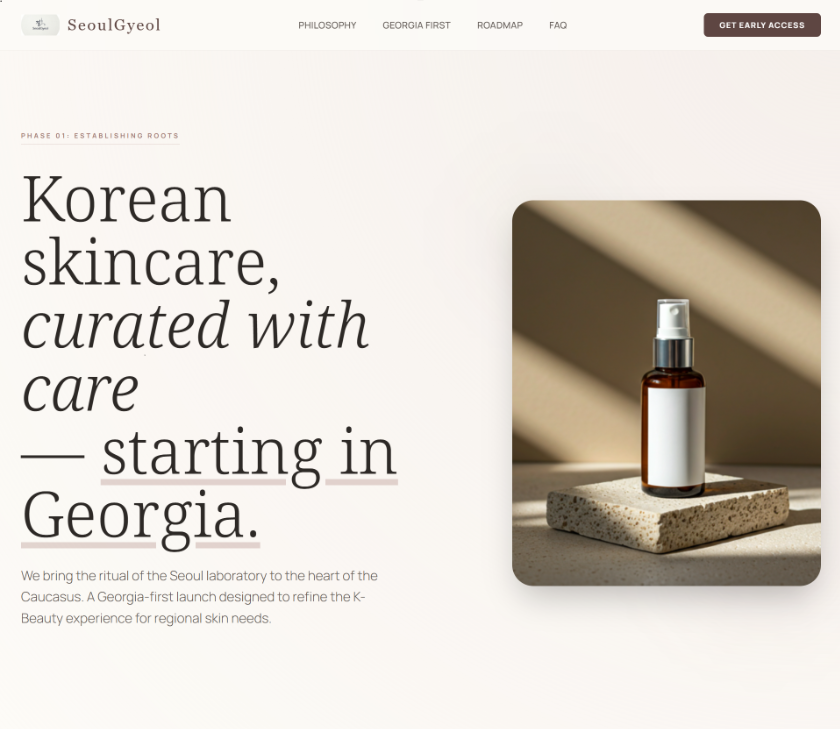
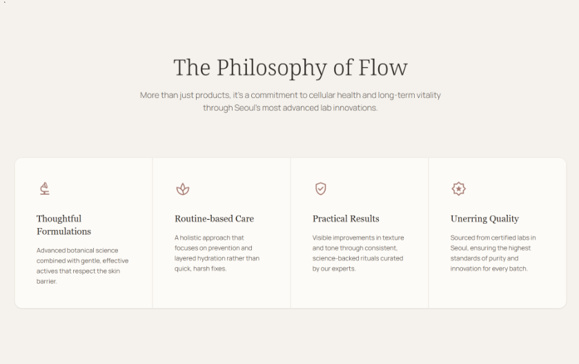
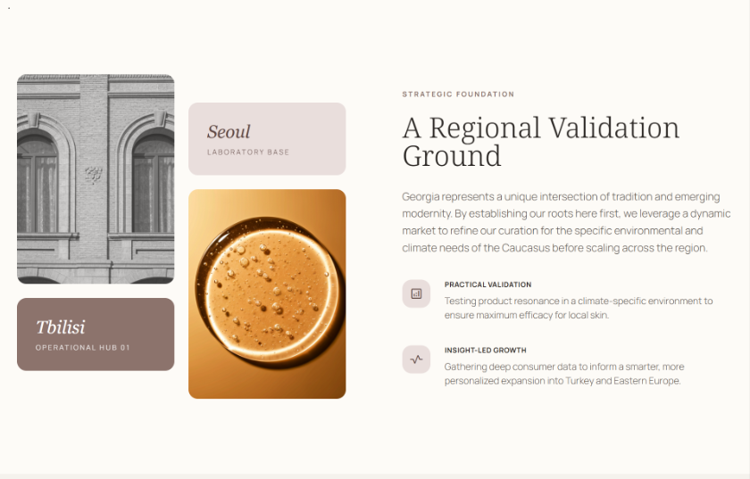
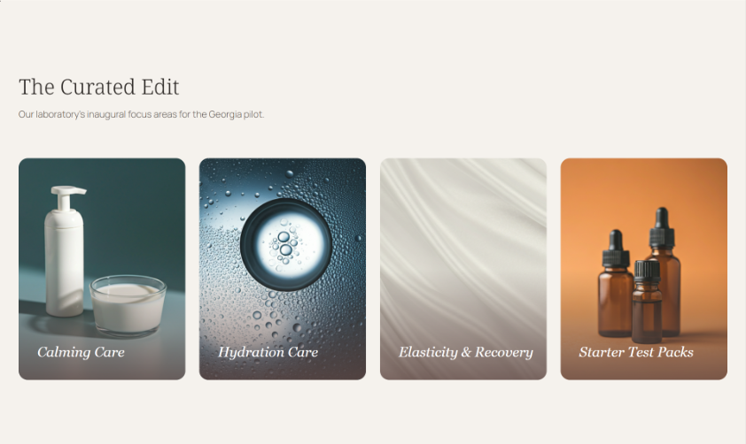
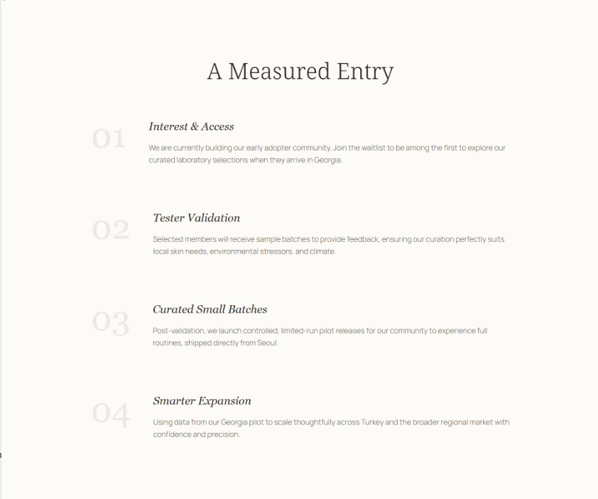
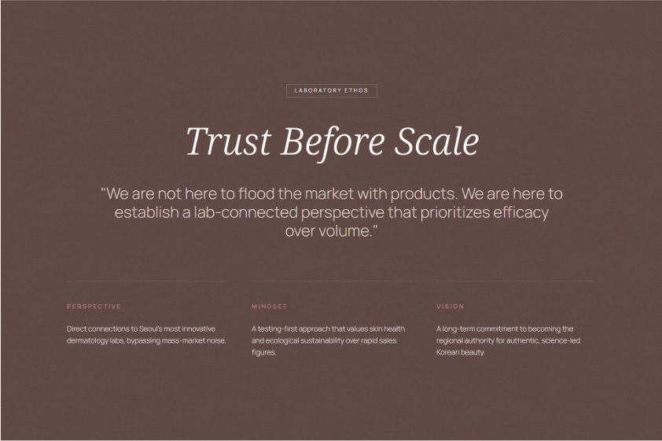
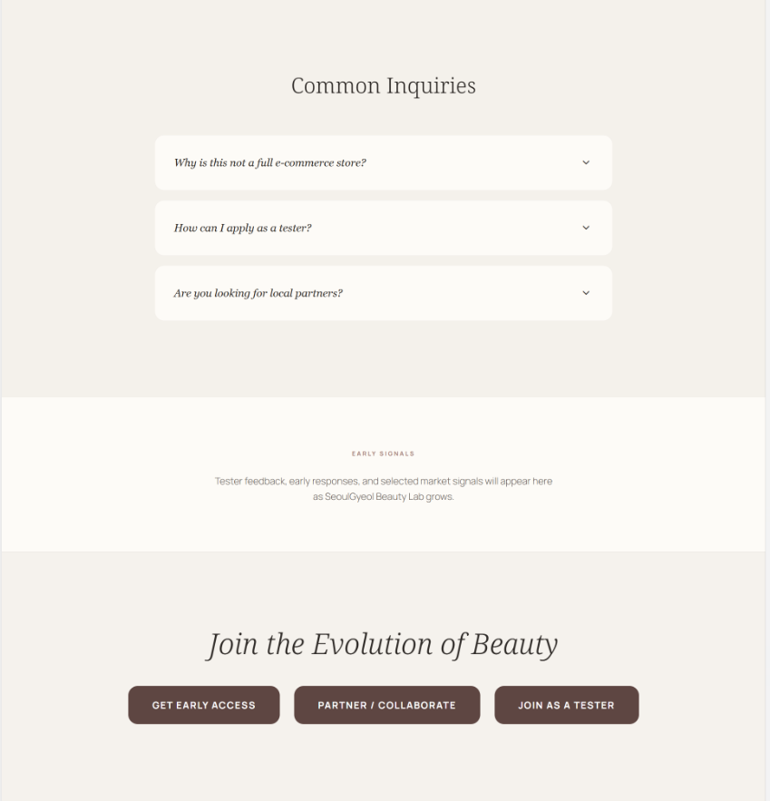
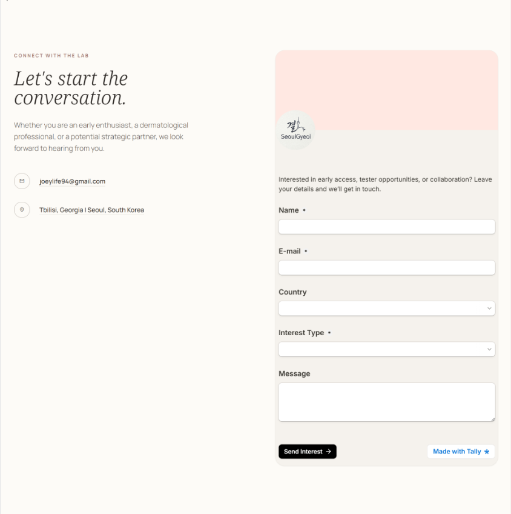

About
Slack, 이메일, 스프레드시트에 흩어진 반복 업무를 내부 도구, 운영 워크플로우, 백엔드 MVP로 구조화합니다.
빠르게 보기 좋은 데모보다, 실제로 운영 가능한 첫 구조를 만드는 데 집중합니다.
지금도 복붙, 수동 확인, 재정리에 시간을 쓰고 있다면 이미 속도와 오류율에서 비용을 내고 있을 가능성이 큽니다.
보통 24–48시간 내 답변합니다 · 범위가 완전히 정리되지 않아도 문의 가능합니다
이런 팀과 가장 잘 맞습니다
작고 명확한 범위에서, 수작업을 실제 운영 가능한 시스템으로 바꾸려는 팀과 잘 맞습니다.
0–10인 SaaS 팀
운영 병목이 이미 보이는데, 전담 플랫폼 팀을 두기엔 아직 이른 팀
워크플로우 MVP를 검증해야 하는 파운더
스프레드시트나 메시지 기반 운영을 2–4주 안에 빠르게 시스템화해 보고 싶은 경우
승인·추적·정리 업무를 벗기려는 팀
반복 업무를 재실행 가능한 내부 도구나 백엔드 흐름으로 바꾸고 싶은 경우
브랜딩 중심 마케팅 사이트, 범위가 아직 열려 있는 대형 플랫폼, 장기 상주형 포지션은 현재 범위와 맞지 않습니다.
서비스
어떤 문제를 이런 형태로 해결합니다
작게 시작해 실제로 쓰일 수 있는 내부 시스템, 운영 워크플로우, 백엔드 MVP를 만듭니다. 범위를 먼저 확인한 뒤 가장 현실적인 첫 단계를 제안합니다.
Workflow Automation Sprint
파운더 · 오퍼레이터스프레드시트, Slack, 이메일로 이어 붙인 반복 업무를 더 이상 수작업으로 돌리기 어렵다.
제공 내용
- 현재 업무 흐름 정리
- 승인/추적/알림 중심 워크플로우 구조화
- 재실행 가능한 MVP + 코드 인계
포함 안 됨
- 전사 시스템 전면 교체
- 범위 없는 대형 제품 기획
- 장기 무기한 운영 대행
Internal Tool Starter
소규모 팀 · 스타트업핵심 운영 업무를 제대로 된 내부 도구나 어드민 화면으로 바꾸고 싶다.
제공 내용
- 범위 정의 · 워크플로우 설계
- 어드민 로직 · 데이터 처리
- 검토 가능한 MVP + 코드 인계
포함 안 됨
- 조직 전체 시스템 교체
- 범위 미정 멀티팀 제품
- 오픈엔드 무기한 지원
Backend MVP Sprint
제품팀 · 창업자API, 백엔드 로직, 외부 연동, 운영 파이프라인을 빠르게 만들어야 한다.
제공 내용
- MVP 범위 백엔드 아키텍처
- API · 데이터 흐름 · 통합 구현
- 인수인계 지향 납품 + 코드 인계
포함 안 됨
- 전사 엔터프라이즈 전환
- 프론트엔드 중심 UI 디자인
- 범위 없는 장기 유지보수
대표 사례
수작업 상품 조사를 반복 실행 가능한 운영 파이프라인으로
Baseline
국가 간 상품 기회 조사는 보통 스프레드시트, 수동 검색, 기준 재정리로 흩어져 있습니다. 기준이 조금만 바뀌어도 처음부터 다시 조사해야 하고, 결과도 사람마다 달라지기 쉽습니다.
What changed
가격 수집, 상품 매칭, 마진 계산, 리포트 출력을 하나의 반복 가능한 파이프라인으로 구조화했습니다. 입력 조건을 바꾸면 같은 흐름으로 다시 실행할 수 있고, 검토를 위한 대시보드와 결과 출력도 함께 정리했습니다.
Result
조사 과정을 "한 번 하고 끝나는 작업"이 아니라, 다시 돌릴 수 있는 운영 흐름으로 바꿨습니다. 수집 → 처리 → 검토 → 리포트까지의 단계가 분리되면서 기준 변경에도 다시 실행 가능한 구조를 확보했습니다.
Good fit
시장 조사, 승인 흐름, 정리 업무처럼 사람이 반복해서 처리하던 운영 과정을 작은 시스템으로 바꾸고 싶은 팀에 잘 맞는 패턴입니다.

Market Overview — 스캔 결과와 시장 비교 데이터

Product Opportunities — 마진 기준 상품 기회 리스트

Market Intelligence — 시장 분석 인사이트
이 사례가 증명하는 역량
추가 사례








SeoulGyeol Beauty Lab
동의 기반 설문 → 점수 산출 → 리포트 생성 → 이메일 전달 파이프라인. 다국어 피부 분석 MVP.
전체 흐름 구현 · 동의 기반 데이터 처리 · 다국어 이메일 전송 확인


Restricted Ops Intake MVP
승인된 Slack 요청 → 구조화된 운영 객체. 서명 검증 · 중복 방지 · 감사 로그 포함.
웹훅 서명 검증 · 채널 허용목록 · 감사 로그 · 통합 테스트 확인


Papyr.us
실시간 공동 편집 + AI 워크플로우 통합 팀 위키. CRDT 기반 동시 편집, RBAC 구조.
Yjs + Socket.IO · Drizzle 스키마 · Vitest + Playwright 테스트 확인
Why work with me
일반 웹 프리랜서와 다른 이유
4.8년간 엔터프라이즈 · 공공 부문 프로덕션 시스템에서 쌓은 경험을 바탕으로 작업합니다. 데모가 아닌 실제 운영 환경 기준으로 설계합니다.
API 응답속도 개선
서비스 분리와 아키텍처 재구성을 통해 핵심 API 응답 속도를 약 30% 단축. 성능 문제를 원인에서 접근합니다.
동시 처리량 20배 개선
인증/세션 경로의 DB 커넥션 풀 병목을 해결해 동시 처리량을 100에서 2,000+ 수준으로 개선했습니다.
Oracle → MySQL 무중단 이전
수백만 건 레코드의 Oracle → MySQL 마이그레이션을 서비스 연속성을 유지하면서 완료했습니다.
인증 · 보안 시스템
Java · Quarkus · Keycloak 기반 OAuth 2.0 SSO 시스템 설계 및 구현. 인증 경계를 실무 환경에서 다뤄왔습니다.
점진적 현대화
모놀리식 플랫폼을 Spring Boot 기반 모듈형 서비스로 단계적으로 분리. 전면 교체 없이 운영하면서 개선합니다.
운영 워크플로우에 통합된 AI
LLM을 독립 데모가 아닌 백엔드 이벤트 흐름 · RAG 파이프라인 · 실제 워크플로우 컴포넌트로 통합합니다.
이런 방식으로 진행합니다
Typical timeline
보통 2–6주 내의 작고 명확한 범위에서 가장 잘 맞습니다. 첫 단계는 전체를 크게 만들기보다, 실제 운영에 바로 도움이 되는 핵심 흐름 1개를 먼저 닫는 방식으로 진행합니다.
Deliverables
작동하는 MVP 또는 범위가 명확한 구현물을 제공합니다. 보통 핵심 백엔드 로직, 워크플로우 구조, 필요한 경우 내부 UI/어드민 화면, 그리고 인계용 설명을 함께 포함합니다.
Communication
이메일과 문서 중심으로 진행합니다. 중간 공유는 텍스트, 스크린샷, 짧은 데모 영상 위주로 드리고, 꼭 필요할 때만 짧은 미팅을 잡습니다.
Scope handling
처음부터 범위를 작게 잠그는 것을 우선합니다. 중간에 새 요청이 생기면 무한 확장하지 않고, 현재 단계와 다음 단계를 분리해 안정적으로 진행합니다.
자주 묻는 질문
범위가 아직 완전히 정리되지 않았는데 문의해도 되나요?
네. 오히려 초기에 가장 필요한 건 모든 기능 목록보다도, 지금 어떤 업무가 수작업이고 어디가 가장 막히는지 정리하는 것입니다. 현재 상태와 원하는 결과만 있어도 첫 범위를 함께 잡을 수 있습니다.
작은 프로젝트도 맡나요?
네. 오히려 2–6주 안에 닫을 수 있는 작고 명확한 범위의 프로젝트와 가장 잘 맞습니다. 처음부터 큰 시스템 전체를 한 번에 만들기보다, 실제로 바로 쓰일 핵심 흐름 1개를 먼저 구현하는 쪽을 선호합니다.
미팅은 얼마나 필요한가요?
기본은 이메일/문서 중심입니다. 진행 중 공유도 텍스트, 스크린샷, 짧은 데모 중심으로 드립니다. 짧은 미팅이 필요할 수는 있지만, 회의가 많은 방식은 지향하지 않습니다.
어떤 기술 스택으로 작업하나요?
기본 강점은 백엔드, 운영 시스템, 내부 도구, 워크플로우 구조화에 있습니다. 프로젝트 목적에 맞는 스택을 우선하며, 특정 기술을 과하게 밀기보다 유지 가능한 구조를 만드는 데 집중합니다.
납품 후 지원도 가능한가요?
가능합니다. 다만 처음부터 무기한 운영 계약을 전제로 하기보다, 현재 단계 납품 범위와 이후 고도화 단계를 분리해서 보는 편이 더 명확합니다.
코드와 산출물의 소유권은 어떻게 되나요?
별도 합의가 없다면, 납품 범위에 포함된 코드와 산출물은 클라이언트가 인계받아 운영 가능한 형태로 전달하는 것을 기본으로 합니다. 세부 조건은 프로젝트 시작 전에 명확히 정리하는 것이 좋습니다.
민감한 운영 데이터도 다룰 수 있나요?
가능합니다. 다만 실제 운영 데이터, 권한, 접근 범위는 프로젝트 초기에 명확히 정리되어야 합니다. 필요 시 더미 데이터 기반 검증이나 최소 권한 접근 원칙으로 진행하는 방식을 우선합니다.
문의하기
이메일 문의로 바로 시작하세요
현재 운영 병목과 원하는 결과를 이메일로 보내주시면,
범위를 검토한 뒤 적합한 첫 단계를 회신드립니다.
문의 이메일
joeylife94@gmail.com아래 4가지만 보내주시면 범위 판단이 빠릅니다.
- 현재 수작업으로 처리 중인 업무 1–2개
- 누가, 얼마나 자주 그 업무를 처리하는지
- 지금 가장 큰 운영 병목 1개
- 이번 단계에서 원하는 운영 결과 1개
- 희망 일정 또는 마감 시점